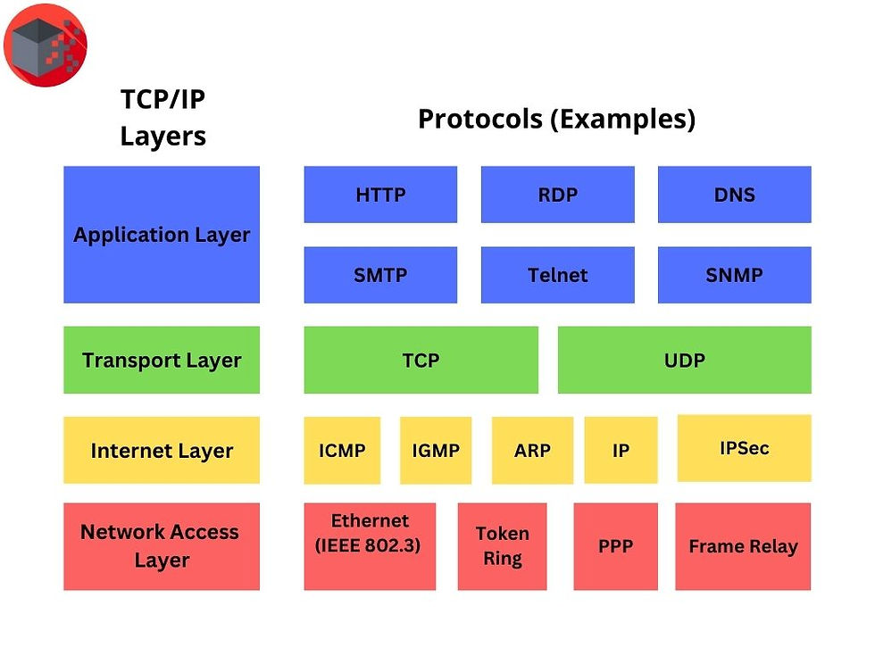

| Arpanet | - | - | TPC/IP | - | Propuesta WWW | - | Lanzamiento WWW | - | Mosaic | - | - | - | YouTube | - | - | iPhone | - | Chrome | - | Bitcoin | - | - | Tiktok | - | Covid-19 | - | ChatGPT | - | X |
|---|
Se adopta el protocolo TCP/IP (1 de enero), considerado el nacimiento oficial del internet moderno.
| Volver | Propuesta WWW-> |
|---|